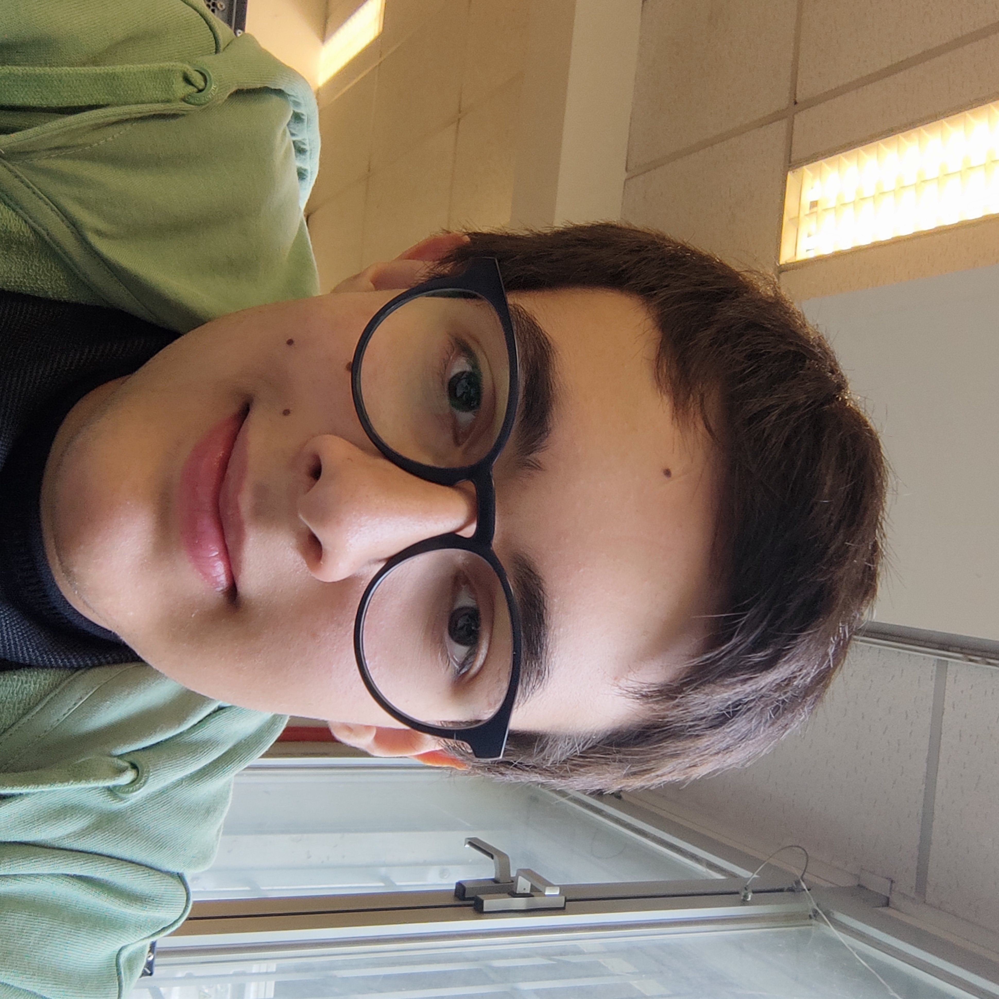

La mia scheda personale:
Ciao, mi chiamo Christian Mario Luparello
Ho 14 anni
Frequento l'istituto Maxwell e sono nella classe 2°C IT
Sono nato l'8 ottobre 2009
Sono residente a Nichelino, TO
Sono cresciuto a Palermo e sono rimasto lì per circa 4 anni,per poi trasferirmi quì a Torino, originariamente davanti a Piazza Galimberti.
Poi,mi trasferii di nuovo per arrivare quì a Nichelino.
Penso di essere un ragazzo ambiverso, ma un aspetto che odio di me è che sono robusto.
I miei interessi principali:
Giocare ai videogiochi: Perchè mi interessano a livello videoludico e culturale;
Cucinare: È anche una mia passione perchè mi piace migliorare le mie abilità culinarie;
Fare fotografie: Anche se questa è più recente, mi è iniziata questa cosa di fare foto a fauna e flora su fotocamera.
Queste cose in realtà non mi fanno impazzire, ma semplicemente le faccio per ammazzare il tempo o perchè mi è improvvisamente venuta la voglia.
Le mie competenze:
Avere un buon inglese: In realtà non è che studio tantissimo questa lingua, ma semplicemente mi so esprimere e raccontare concetti leggendo qualche cosa sul libro di testo, oppure imparando dai video dei content creator americani, inglesi, ecc. La metto spesso in pratica quando gioco online.
Diciamo che sono un ampio melòmane, ovvero che ascolto tanta musica e tanti generi diversi fra loro.
Mi intendo anche leggermente di coding per informatica, ad esempio mi ricordo che ero abbastanza bravo su Scratch.
Dopo il diploma, in realtà ancora non so cosa fare.
Ho tanto tempo da trascorrere ma anche tanto tempo per pensare. Penso che per ora voglia gestire un'azienda di robot da "compagnia" o comunque che possono servire a qualcosa nelle nostre case, oppure semplicimente per divertire i bambini del futuro.
Una volta, Phil Collins disse:
"But you don't know what you got 'till you lose it."
Ovvero:
"Ma non sai cosa possiedi fino a quando non lo perdi."
Ho scelto questa frase perchè comunque è una bella frase di un cantante inglese che seguo, ma anche perchè è un fatto vero. Spesso io, o noi, non ci accorgiamo di quello che abbiamo.